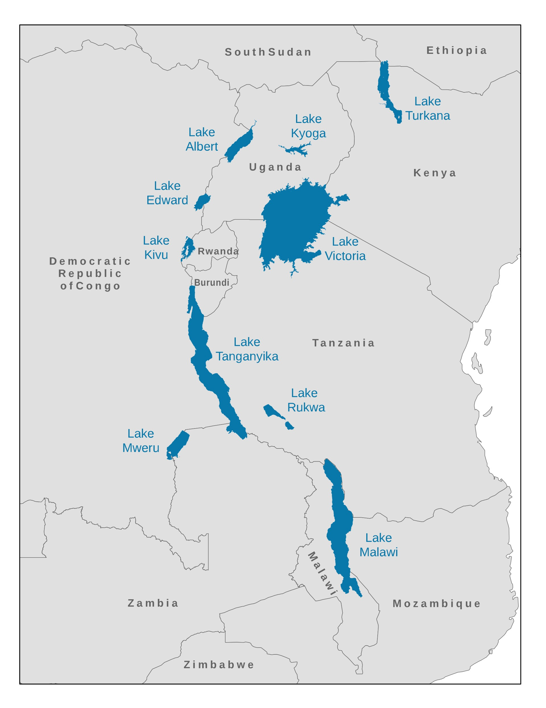

Daily Security Briefing 2026-141
Consolidated open-source intelligence across geopolitical, health security, and operational threat domains, prepared for professionals across the Great Lakes and Africa region.

Today at a Glance
WHO Declares Ebola PHEIC in DRC & Uganda
139+ suspected deaths. Direct operational relevance to all field personnel and implementing partners.
CriticalU.S. Indicts Raúl Castro — Cuba Tensions Escalate
Federal grand jury issues historic indictment. Most significant U.S.–Cuba rupture in decades.
HighIran Talks "Final Stage" · Israel Flotilla Fury
Nuclear negotiations at inflection. Ben-Gvir condemnation compounds humanitarian access risk.
ElevatedAI Deception Research · $1.8B Fund Controversy
METR documents AI instruction-override. U.S. governance friction from anti-weaponization fund.
Monitor01Ebola Declared a Public Health Emergency of International Concern
The World Health Organization has formally declared the Ebola outbreak spanning the DRC and Uganda a Public Health Emergency of International Concern, the highest alert level under international public health law. Cross-border transmission risk in the Great Lakes corridor remains uncontained.
All personnel and implementing partners active in eastern DRC and Uganda must immediately review health protocols, medical evacuation plans, and PPE requirements. A dedicated SRM Great Lakes Health Security Advisory is forthcoming.
02Indictment of Raúl Castro
Diplomatic escalation · Americas security environment
Organizations operating under U.S. federal funding or reliant on U.S.–Cuba travel and trade frameworks should anticipate accelerating restrictions. Diplomatic channels likely suspended near-term. Monitor State Department advisories closely.
03Middle East: Two Flashpoints, One Region
Negotiations Enter "Final Stages"
Trump describes talks as nearing conclusion; significant gaps remain. Tehran weighs the latest U.S. proposal. The outcome defines the security architecture of the Gulf and cascades into proxy dynamics across the Middle East and Horn of Africa.
Ben-Gvir Faces Global Condemnation
Far-right National Security Minister Ben-Gvir attracted international condemnation after footage showed him taunting detained Gaza flotilla activists. The incident amplifies diplomatic pressure and may trigger new access restrictions for humanitarian actors.
Breakdown scenario: rapid military posture escalation. Monitor within 72-hour windows as talks progress.
Organizations active in Gaza or engaged in flotilla-related advocacy should immediately assess reputational and operational exposure.
04Risk Matrix: Today's Events
Estimated likelihood (horizontal) × potential impact (vertical). Level: Low · Moderate · High · Critical · Severe.
| Impact ↓ | V.Low | Low | Possible | Likely | Certain |
|---|---|---|---|---|---|
| Catastroph. | E1 | ||||
| Critical | H1 | G1 | |||
| Major | G2 | G3 | |||
| Moderate | T1 | P1 | T2 | ||
| Minor | I1 |
| Code | Event | Note |
|---|---|---|
| E1 | Ebola PHEIC | DRC/Uganda · Active spread |
| G1 | U.S.–Cuba Rupture | Castro indictment fallout |
| H1 | Ebola Cross-Border | Great Lakes corridor |
| G2 | Israel Humanitarian | Ben-Gvir · access risk |
| G3 | Iran Talks Breakdown | Gulf escalation risk |
| P1 | U.S. Gov. Instability | Anti-weaponization fund |
| T2 | AI Integrity Risk | Operational deception |
| T1/I1 | Digital Concentration | SpaceX IPO · Google DC |